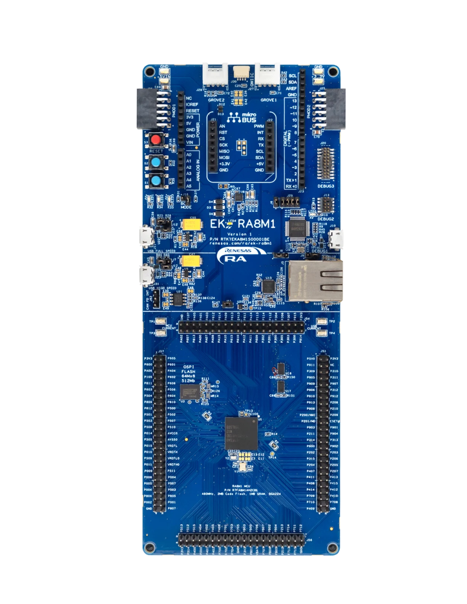

EK-RA8M1
This is a port of NuttX to the Renesas EK-RA8M1 evaluation kit, featuring the R7FA8M1AHECBD (BGA224) MCU: an Arm Cortex-M85 running at up to 480 MHz, with 2016 KiB of code flash, 896 KiB of SRAM and 12 KiB of data flash.


See the Renesas website for information about the EK-RA8M1.
Flat, no-TrustZone image
This port does not use TrustZone: it is a flat image that always runs in
the secure state, and it uses the secure memory and register aliases
throughout (RA8M1 User’s Manual Table 4.1) – code flash at 0x0200_0000,
SRAM at 0x2200_0000, data flash at 0x2700_0000. The non-secure
aliases (0x12xx_xxxx/0x32xx_xxxx/0x37xx_xxxx) are not used.
The EK-RA8M1 ships with the TrustZone security partition set to the Renesas FSP sample project’s boundary. A flat NuttX image needs the whole flash marked secure instead, which has to be set once with the flash programmer before the first NuttX image is written (see Loading Code below).
Clocking
include/board.h configures this clock tree from the EK-RA8M1’s 20 MHz
resonator (see arch/arm/src/ra8m1/ra_clockconfig.h for how every
option is derived and validated):
Clock |
Source |
Frequency |
|---|---|---|
MOSC |
20 MHz resonator on EXTAL/XTAL |
20 MHz |
PLL1 |
MOSC / 2, x96 |
960 MHz VCO |
CPUCLK |
PLL1 output P / 1 |
480 MHz |
ICLK |
PLL1 output P / 2 |
240 MHz |
PCLKA |
PLL1 output P / 4 |
120 MHz |
PCLKB |
PLL1 output P / 8 |
60 MHz |
PCLKC |
PLL1 output P / 8 |
60 MHz |
PCLKD |
PLL1 output P / 4 |
120 MHz |
PCLKE |
PLL1 output P / 2 |
240 MHz |
FCLK |
PLL1 output P / 8 |
60 MHz |
BCLK |
PLL1 output P / 4 |
120 MHz |
SCICLK |
PLL1 output Q / 4 |
120 MHz |
SCICLK feeds the baud rate generator of every SCI UART; it is only
configured (and its PLL only started) when at least one CONFIG_RA_SCIn_UART
is enabled. 120 MHz was chosen because it gives 115200 baud with 0.16 %
error (the reset default, the 8 MHz MOCO, gives 3.5 % error).
Arduino Shield GPIO
The Arduino Uno shield header’s D2-D5 are wired as inputs and D6-D13 as
outputs, through the generic GPIO expander driver (CONFIG_DEV_GPIO):
Pin
R7FA8M1AHECBD
Direction
Device
D2
P906
Input
/dev/gpio0
D3
P907
Input
/dev/gpio1
D4
P905
Input
/dev/gpio2
D5
P601
Input
/dev/gpio3
D6
P602
Output
/dev/gpio4
D7
P908
Output
/dev/gpio5
D8
P909
Output
/dev/gpio6
D9
P603
Output
/dev/gpio7
D10
P413
Output
/dev/gpio8
D11
P411
Output
/dev/gpio9
D12
P410
Output
/dev/gpio10
D13
P412
Output
/dev/gpio11
D0/D1 are not registered here: they are SCI9’s RXD9/TXD9 pins (see Serial Console below). The inputs are plain floating inputs, with no pull-up or pull-down.
src/ra8m1_gpio.c registers these pins with gpio_pin_register().
apps/examples/gpio reads or writes any of them from nsh:
nsh> gpio /dev/gpio0
nsh> gpio -o 1 /dev/gpio4
Serial Console
The EK-RA8M1’s on-board debugger (a J-Link) provides a virtual COM port on SCI9:
Signal
R7FA8M1AHECBD
TXD9
PA14
RXD9
PA15
SCI9 is the serial console in the default configurations, at 115200 8N1.
Timers
Any of the GPT channels can be registered as a timer. The board registers
GPT0 (32-bit) as /dev/timer0 and GPT9 (16-bit) as /dev/timer1 when
CONFIG_RA_GPT0_GPT and CONFIG_RA_GPT9_GPT are set (see the
GPT section of the RA8M1 platform page). No pins are used. PCLKD, which
clocks the timers, is 120 MHz in this port.
The timer-gpio configuration builds on nsh with both channels
enabled, the GPIO expander driver (see Arduino Shield GPIO above), and
apps/examples/timer_gpio built in. Unlike apps/examples/timer,
which only logs samples to the console, timer_gpio toggles a GPIO pin
once per timer period – so the timer’s actual accuracy can be checked
directly with an oscilloscope or logic analyzer on the pin, rather than
trusted from console output alone:
nsh> timer_gpio -t /dev/timer0 -g /dev/gpio4
The period comes from CONFIG_EXAMPLES_TIMER_GPIO_INTERVAL (200 ms in
this configuration). Note that /dev/timer1 (GPT9, 16-bit) tops out at
about 559 ms at this port’s 120 MHz PCLKD: a period that fits
/dev/timer0 may return -ERANGE on /dev/timer1.
Loading Code
This port produces a flat image (no TrustZone), so it is flashed with
rfp-cli (the Renesas Flash Programmer CLI), through the on-board
J-Link, over SWD:
rfp-cli -device ra --tool jlink -if swd -p ./build/nuttx.hex
Note: the image must be flashed as ELF, HEX or SREC, not as a raw
binary: the option-setting words (OFS0/OFS1/OFS2, see
ra_option_setting.c) sit in flash option memory well above the code
flash region, and a raw objcopy binary would not carry them.
Note: a board fresh from the factory, or last flashed with the Renesas
some project, has the TrustZone boundary set to that project’s
partition, which might too small for this flat
image and makes rfp-cli fail to erase/program with an address error.
Set the whole flash and SRAM to secure once, before the first NuttX
flash:
rfp-cli -d ra -t jlink -if swd -erase-chip
This is a persistent, one-time device setting; it does not need to be repeated on later flashes of a NuttX image.
Configurations
nsh
Configures the NuttX Shell (nsh) with the serial console on SCI9, plus
the ostest test suite.
nsh-leds
Same as nsh, but without ostest, and enables the userled
driver on /dev/userleds (CONFIG_ARCH_LEDS is not set, so NuttX
does not drive the LEDs itself; see LEDs above).
timer-gpio
Same as nsh, but registers GPT0 and GPT9 as /dev/timer0 and
/dev/timer1, enables the GPIO expander driver on the Arduino shield
header (see Arduino Shield GPIO above), and builds in
apps/examples/gpio and apps/examples/timer_gpio (see Timers
above).